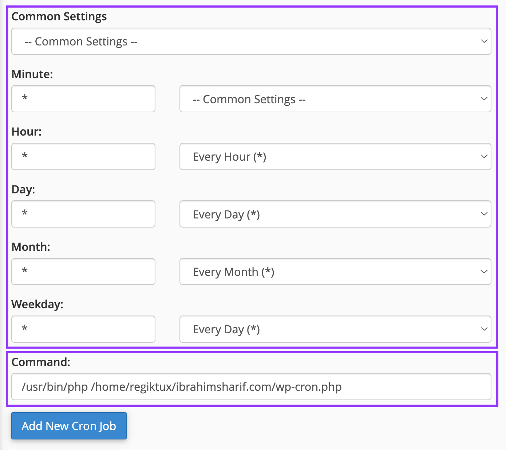

Since the web spread developers, business owners, and individuals use different types of platforms for their websites and some of them are very complex and run scheduled jobs in the background at different time intervals. This can be a processing of data, cleaning of data, sequential ordering, and processing of other jobs as well. This can also be run per minute, per hour, per day, or even once a year.
In this guide, We will be demonstrating configuring Cron Jobs for the WordPress website which is the top platform used by Website Owners on the web.
By default, WordPress runs all the scheduled events with PHP and the cron script for WordPress is the wp-cron.php file under the root directory of WordPress. The issue is when no execution is occurring on the website either on the frontend and or especially on the backend, WordPress scheduled events tend to fail or miss the time! That is the important reason to consider disabling cron execution from PHP and to ensure the execution and processing of scheduled events server-side cron job is the best way among all the possibilities.
Disable default PHP-based Scheduled Job
The initial step is to disable the default method as the PHP-based job and then we execute or invoke the wp-cron.php from the cron job. To do this please open the wp-config.php file and look for the section below:
1/* Add any custom values between this line and the "stop editing" line. */2
3
4/* That's all, stop editing! Happy publishing. */We need to add a new Configuration Directive within these two lines which are below:
1define('DISABLE_WP_CRON', true);Now the code will look similar as below:
1/* Add any custom values between this line and the "stop editing" line. */2
3define('DISABLE_WP_CRON', true);4/* That's all, stop editing! Happy publishing. */
This will disable or tell WordPress not to run the scheduled events from PHP anymore.
Identifying Cron Command
Now we need to find the website directory and the WordPress Cron file so that we can put that in the Cron Settings.
Check Home Directory
When you log in to the cPanel dashboard on the right sidebar you will see some information and the Home Directory listed. In this case, it is
1/home/regiktux
Check Document Directory
Now we will check the Document Directory for the WordPress website. It can be found from the Domains option:

Now we need to look for the Domain of the WordPress website and you will see the Document Directory where a Home Icon will represent the Home Directory as we have collected in the previous step. In this case, the Document Directory is 🏠**/ibrahimsahrif.com**

So our total path for the domain is:
1/home/regiktux/ibrahimsharif.comAnd the WordPress Cron path is:
1/home/regiktux/ibrahimsharif.com/wp-cron.phpFinding PHP Binary Path
Now we need to find the PHP Binary Executable Path and Terminal or SSH Shell that would be suitable for this. Please run the below command in the terminal:
1whereis phpThis will show results like below and as you can see /usr/bin/php and /usr/local/bin/php both are available here and are the most common path for PHP Binary Executable.

Confirming PHP Version
If you find both of them then both of their versions may be different and we need to confirm the PHP version by executing the below command:
1/usr/bin/php -vThis command shows the PHP version for that exact PHP binary and here you can see it is 7.4.33

Cron Settings
Now please go to the Cron Jobs option as shown below:

This will offer some input fields to set the Cron Intervals and the Cron Command as below:

Most of the case, the suitable recommended time interval for running the Cron job is per minute. Putting a Star(*) means EVERY. Here all 5 stars mean Every Minute on Every Hour on Every Day on Every Month on Every Weekday.
The command for running WordPress is including the PHP Binary:
1/usr/bin/php /home/regiktux/ibrahimsharif.com/wp-cron.phpAnd the total command including time intervals which is the resulting final output is:
1* * * * * /usr/bin/php /home/regiktux/ibrahimsharif.com/wp-cron.phpConfirm Cron Command
Now we need to confirm the cron command by executing the command in either the terminal or SSH Shell directly so that no issues occur or our configuration is correct.
Resolve Cron Command 500 Error
The command we used in this case executed shows an error of 500 which is server side as below:

A successful command should output a Response Status of 200. There are various possible reasons that could cause this error. The most common issue is the file permission and setting 755 resolves the such issue as shown below:

After changing the file permission to 755 running again the cron command runs successfully and shows the successful response status as below:

Discarding Cron Command Output
As we just run the command it showed us an output that we do not need or should discard through running the Cron Job. Our Original Command is:
1/usr/bin/php /home/regiktux/ibrahimsharif.com/wp-cron.phpNow we can discard the output by sending the output to NULL adding /dev/null 2>&1 to the end. The final command including time intervals is:
1* * * * * /usr/bin/php /home/regiktux/ibrahimsharif.com/wp-cron.php > /dev/null 2>&1This does not output anything but does the job silently as shown below:

That’s all for now! Thanks and enjoy working with WordPress Scheduled Events.